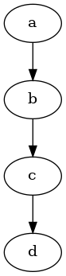

1 引言
Graphviz 是一个开源的图可视化工具，非常适合绘制结构化的图标和网络。Graphviz 使用一种叫 DOT 的语言来表示图形。本文主要记录了如何使用dot语言的一些实例。 Graphviz能供我们定义的图形元素有3种：
- 图
- 定点
- 边
2 图形类型
- 有向图
- 无向图
3 dot语言和图片实例
3.1 顺序图
先尝试生成最简单的顺序图：
digraph g { a->b b->c c->d } |
使用编译指令:
dot -Tpng test.dot -o test.png |
可以得到以下图片：

可以看到，默认的顺序图是从上到下的。也可以让这幅图从左往右排列，代码修改如下：
digraph g { rankdir=LR a->b b->c c->d } |
可见，是从上往下还是从左往右取决于rankdir这个全局变量。
3.2 带有子图的绘图要点
一大要点是带有子图的名字要带有cluster作为前缀。
4 record定义
record是可以自由定义区域内容的节点，而且每个区域可以有独立的箭头。
digraph g { struct1 [shape = Mrecord, label = " <f0> left | <f1> mid | <f3>right"] struct1:f1 -> B struct1:f3 -> C B -> C } |
5 画板

6 TODO 使用Python生成复杂的图
7 TODO 收集常用的图片素材方便作为节点
8 要点
rankdir会定义方向，之后就是根据定义节点的顺序来显示，而不是节点的逻辑结构。这个还需要不断实践。
Render by hexo-renderer-org with Emacs 25.3.1 (Org mode 8.2.10)